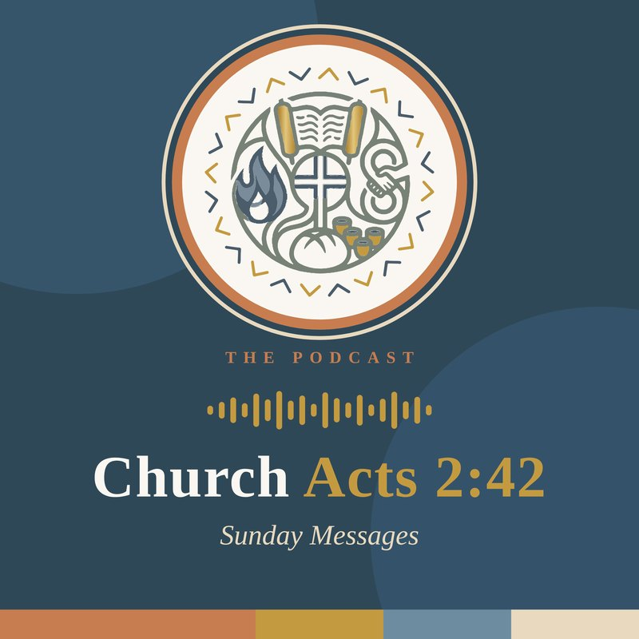

Sermons
youtube.com/@Acts2-42.church
Watch every Sunday message on YouTube
We stream live Sundays at 11:00 AM, starting December 6, 2026. Every message is saved on our YouTube channel, so you can watch anytime and share it with a friend.
Find a message

The podcast
Sunday Messages, wherever you go
Listen to each Sunday’s message on your commute, at the gym or around the kitchen table. New episodes are added every week, with the first on December 6, 2026.
Worship with us live
Join the livestream Sundays at 11:00 AM, or better yet, come worship with us in person.